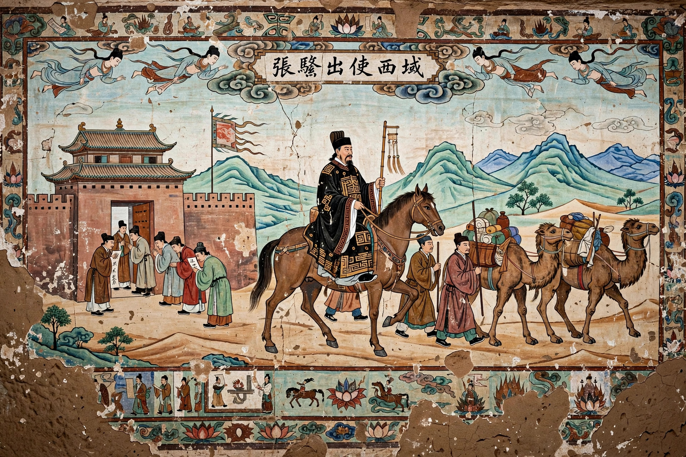

| Zhang Qian (164–114 BC) | |
|---|---|
| Born | Chenggu, Hanzhong |
| Known for | Opening the Silk Road |
| Employer | Emperor Wu of Han |

Zhang Qian (164–114 BC) was a Chinese explorer and imperial envoy of the Han dynasty whose journeys to Central Asia opened the routes later known as the Silk Road and brought China its first reliable information about the Western Regions.
In 138 BC Emperor Wu sent Zhang Qian west to seek an alliance with the Yuezhi against the Xiongnu. Captured by the Xiongnu, he was held for about ten years, escaped, and reached Dayuan (Ferghana), Kangju and the Yuezhi in Bactria. Though the Yuezhi declined an alliance, Zhang gathered detailed reports on Ferghana, Sogdiana, Bactria and even India and Parthia. On his return he was captured again and reached Chang'an in 126 BC after a 13-year absence.
In 119 BC he led a large mission to the Wusun. His envoys and reports spurred Han expansion into the Tarim Basin, regular Silk Road trade, and the introduction to China of alfalfa, grapes and other goods. He died in 114 BC and is remembered in China as a pioneering diplomat.